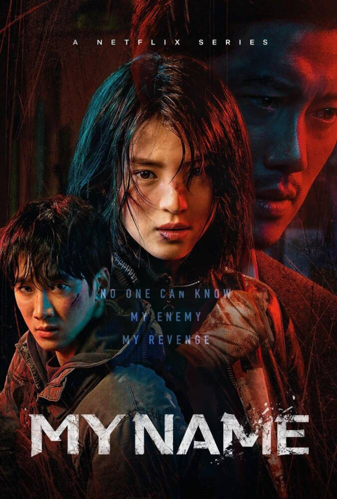
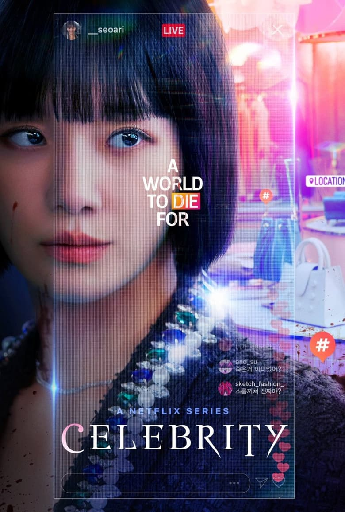
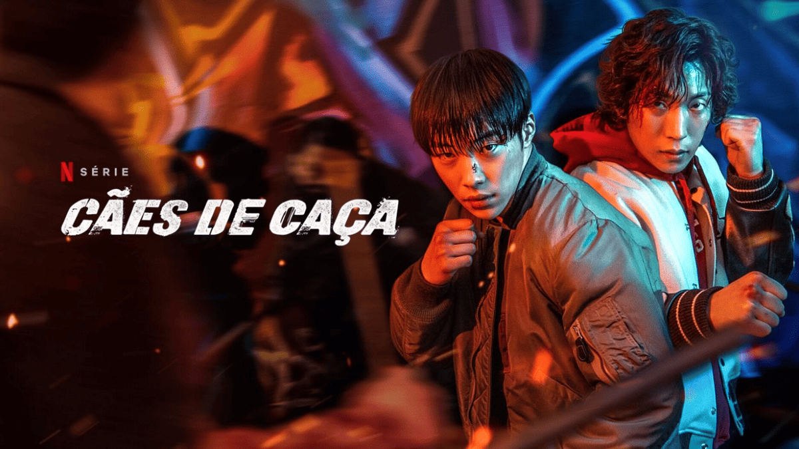

- My Name 
My Name, série sul-coreana original da Netflix, acompanha Yoon ji-woo (Han So-hee), uma mulher que, após presenciar o assassinato do pai, busca vingança a todo custo. Ela deposita sua confiança em um chefão do crime organizado da Córeia do Sul que promete justiça a ela. Sob seu comando, Yoon ji-woo entra para polícia coreana na intenção de se tornar informante para ele
- Celebrity 
Seo A-ri conquista sucesso, fama e poder nas redes sociais da noite para o dia. Mas logo descobre que o glamoroso mundo dos influenciadores pode ter consequências mortais.A influenciadora Seo A-ri choca a internet ao voltar à vida e revelar o segredo de sua ascensão meteórica e queda trágica.
- Vincenzo
Vincenzo é uma produção que foi ao ar em 2021 simultaneamente na Coreia do Sul, através da emissora tvN, e no mundo pela Netflix, estrelada pelo famoso ator de K-dramas Song Joong-ki (Descendentes do Sol). Na trama, o advogado e conselheiro da máfia Vincenzo Cassano, que nasceu na Coreia, mas cresceu na Itália, volta ao seu país natal para recuperar uma fortuna guardada em um cofre no subterrâneo de um edifício. Lá, ele se vê envolvido com moradores do prédio, que estão prestes a ser despejados por uma empresa corrupta.
- A Lição

Anos depois de ser vítima de terríveis atos de violência na escola, uma mulher coloca em prática um elaborado plano de vingança.Então, decide criar um elaborado plano de vingança contra seus algozes do passado e se torna professora da criança. A partir de então, Moon passa a perseguir seus antigos colegas que praticavam bullying contra ela e, aos poucos, descobre seus segredos.
- Big Mouth

O dorama “Big Mouth: De Vigarista a Vingador” (“Big Mouth”) mistura drama e suspense em uma trama repleta de mistérios para contar a história de um advogado que, do dia para noite, passa a ser apontado como um notório vigarista. Saiba mais sobre a atração produzida pela emissora MBC TV e que está disponível em streaming no Brasil: No seriado sul-coreano “Big Mouth: De Vigarista a Vingador”, acompanhamos a história de Park Chang-ho (Lee Jong Suk), um advogado de pouco sucesso e ainda menos sorte .
- Mask Girl

A Netflix divulgou três pôsteres e o trailer de "Mask Girl", uma nova série de mistério e suspense sul-coreana. A trama gira em torno de uma modelo online, que se torna popular ao usar uma máscara. A prévia apresenta Kim Mo-Mi em três momentos diferentes da vida. Ela vai de funcionária corporativa a showgirl até finalmente se tornar uma prisioneira, após cometer três homicídios. A trama gira em torno de como e por que ela se tornou uma assassina , e o que fará após ficar atrás das grades.
- Cães de Caça 
Embora a maior parte dos K-dramas da Netflix envolvam romance e beijos na boca, o dorama Cães de Caça (Bloodhounds) retrata uma realidade muito menos convidativa na Coreia do Sul: a exploração de grandes corporações sobre cidadãos pobres, a normalização de empréstimos com agiotas, e a violência nas ruas.